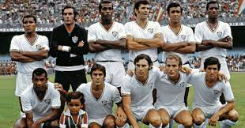
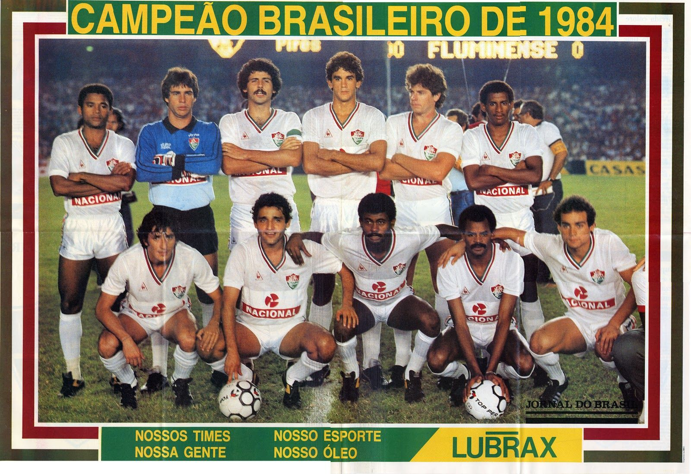
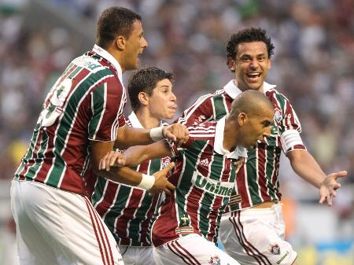
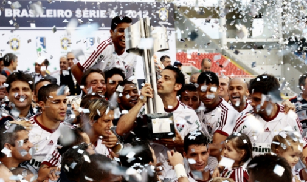
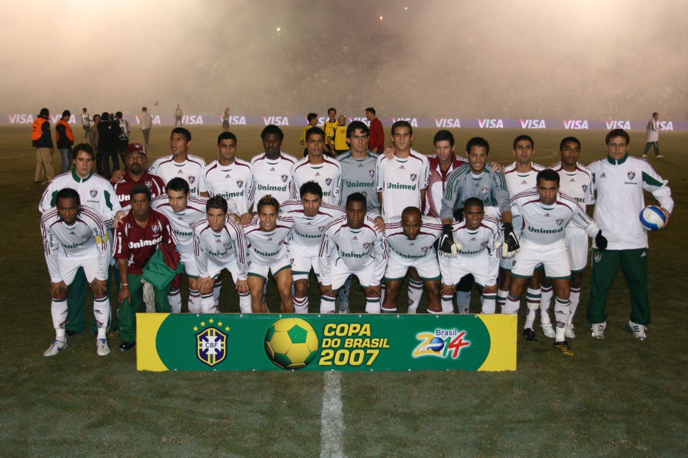

Taça Roberto Gomes Pedrosa 1970
A Campanha
A 14° edição do Campeonato Brasileiro e a última ainda com o nome de Roberto Gomes Pedrosa (Taça de Prata) foi vencida pelo Fluminense, justamente no ano de conquista do tricampeonato mundial pela seleção brasileira no México. O título representou uma quebra de um tabu onde os paulistas haviam conquistados quatro títulos em sequência. Essa edição também ficou marcada como a única que contou com todos os campeões mundiais brasileiros em campo.
O Fluminense se sagraria campeão após um quadrangular final perfeito, permitindo o nosso tricolor sagrar-se campeão apenas com um empate em 1x1 na última rodada do quadrangular, contra o Atlético-MG, em um Maracanã abarrotado com 132 mil torcedores.
Estatísticas
Maior Goleada (Fluminense): Fluminense 6 x 1 Ponte Preta
Artilheiro (Fluminense): Flávio com 11 gols
Maior Público: 132.000 torcedores presentes (Fluminense x Atlético MG - Última rodada do quadrangular final
Campeonato Brasileiro 1984
A Campanha
O título brasileiro de 1984 podemos dizer que foi a consagração de uma era que foi conhecida como a máquina tricolor. O Fluminense no ano de 1984 conquistou pela segunda vez um Campeonato Brasileiro inchado de clubes (a competição contou com 41 clubes divididos em 8 grupos). O Fluminense assim como em 1970 se classificaria na segunda colocação do seu grupo na primeira fase, a competição contaria ainda com outras duas fases, até chegarmos a fase final em formato de mata-mata.
Nas quartas de final o Fluminense passou pelo Coritiba após um empate em 2x2 no primeiro jogo em Curitiba e um 5x0 na volta no Maracanã. Nas semifinais o Fluminense passaria pelo Corinthians após um 2x0 no Rio na primeira partida, e um empate em 0x0 na volta em São Paulo. Por fim, o Fluminense enfrentaria o Vasco na grande final, ambas disputadas no Maracanã, com vitória do Tricolor na primeira partida por 1x0 e empate na segunda partida em 0x0.
Cabe destacar que a máquina tricolor em seus últimos 5 jogos na competição não teve a sua defesa vazada, o que é um fato incrível considerando a dificuldade da competição nessa etapa. O Fluminense inclusive foi o clube de melhor campanha da competição, terminando ainda como a melhor defesa da competição, com apenas 11 gols sofridos. A competição consagrou jogadores como Romerito e Assis.
Estatísticas
Maior Goleada (Fluminense): Fluminense 5 x 0 Coritiba
Artilheiro (Fluminense): Washington e Assim com 9 gols
Maior Público: 128.781 pagantes (Fluminense x Vasco - 2° jogo da final)
Campeonato Brasileiro 2010
A Campanha
Após 26 anos de espera o Fluminense finalmente voltaria a conquistar um Campeonato Brasileiro, o seu terceiro em sua história. A campanha como não poderia deixar de ser foi muito dramática, tendo sido decidida apenas na última rodada, quando o Fluminense venceria o Guarani no Engenhão por 1x0, gol marcado por Emerson Sheik.
O ano foi marcado por uma campanha perfeita do tricolor até o fechamento do Maracanã para obras da Copa de 2014. Outro grande fator a ser destacado foi a decisão de Muricy Ramalho em permanecer no Fluminense mesmo tendo uma proposta da CBF nas mãos para comandar a seleção brasileira.
O título acabou por coroar um time que ficou conhecido como time guerreiros e virou o novo slogan do clube, quando em 2009 o Fluminense escapou de um rebaixamento quase certo, quando a matemática dizia que a chance de acontecer a tragédia era de 99%. Em 2010 o clube vice campeão da copa Sulamericana entrou na competição nacional com toda garra, para finalmente sair de uma indesejável fila de títulos. Dario Conca foi a grande estrela do Fluminense e também da competição.
Estatísticas
Maior Goleada (Fluminense): Fluminense 5 x 1 Atlético-MG
Artilheiro (Fluminense): Washington com 10 gols
Maior Público: 76.205 Pagantes (Vasco 2 x 2 Fluminense - 15° Rodada)
Campeonato Brasileiro 2012
A Campanha
Dois anos depois da conquista do tricampeonato o Fluminense voltaria a conquistar o Campeonato Brasileiro, o seu quarto na história, dessa vez a campanha não foi sofrida como aconteceu em 2010, quando o tricolor somente conquistou o título na última rodada, após derrotar o Guarani por 1x0 no Engenhão. Dessa vez o Fluminense contava com um elenco repleto de craques e foi suficiente para garantir o título da competição com três rodadas de antecedência.
O campeonato foi marcado por uma grande disputa pelo título entre o Fluminense liderado por Deco, Fred, Thiago Neves e W.nem, contra o Atlético-MG liderados por Ronaldinho Gaúcho, Bernard e Marcos Rocha. A disputa foi tão grande que o Atlético-MG liderou a competição da 7° rodada até a 21°. Na 22° rodada o Fluminense assumiria o posto e não largaria mais a posição, consolidando uma grande campanha e o tetra campeonato.
Na rodada que decretou o título, o Fluminense foi até presidente prudente enfrentar um ameaçado Palmeiras, um jogo dramático, onde o Fluminense chegou abrir 2x0, mas cedeu o empate a um Palmeiras desesperado, no final Fred marcaria o gol da vitória que decretou o título ao tricolor e praticamente rebaixou o clube paulista para a segunda divisão.
Estatísticas
Maior Goleada (Fluminense): Fluminense 4 x 0 Bahia
Artilheiro: Fred com 20 gols
Maior Público: 62.207 pagantes (São Paulo x Náutico - 36° Rodada)
Copa do Brasil 2007
A Campanha
Após um ano de 2006 muito abaixo das expectativas, o Fluminense fez uma profunda reformulação em seu elenco, trazendo jogadores de destaque do Campeonato Brasileiro como Cícero e Soares, assim como Alex Dias. O time contava ainda com Thiago Silva, Fabinho, Arouca, Carlos Alberto e Roger, o então veterano com muita experiência para ajudar o time nos momentos decisivos. A expectativa sobre esse elenco era alta e foi coroada com essa incrível conquista
Mas engana-se quem imagina que a competição foi fácil para o Tricolor. Na verdade o Fluminense não convencia na competição, com um futebol burocrático e pouco eficiente. Destaque para as duas primeiras fases da competição, quando o tricolor sofreu para derrotar o desconhecido ADESG do Acre por 2x1 fora de casa, e para a derrota para o América de Natal, em Natal por 1x0. O Fluminense seguiu cambaleante na competição, ao passar pelo Bahia depois de dois empates, 1x1 no Rio e 2x2 em Salvador.
O Tricolor chega as quartas de final repleto de desconfiança, devido a péssima campanha que o clube vinha realizando na competição, para piorar o clube iria ter pela frente o sempre perigoso Atlético-PR. Eis que nesse confronto na partida de volta em Curitiba, quando o drama já era grande, após um empate por 1x1 no primeiro jogo no Rio, a partida de volta se arrastava com o Fluminense apático, e então Adriano Magrão surge, com certeza com a reclamação de muitos (inclusive a minha) e o predestinado minutos depois de sua entrada marcaria o gol que nos arrancaria de vez para o título! A confiança que o atacante ganhou foi tão grande que a bola não parou mais de entra nas redes adversárias até a final, e de fato se repetiu o feito nas semifinais contra um difícil Brasiliense e na final contra o Figueirense. Podemos dizer que a competição acabou com dois heróis, Adriano Magrão em Curitiba e Roger Machado com o gol logo no início da partida em Florianópolis. Um título carregado de sentimentos para o torcedor tricolor, onde pouco mais de 10 anos depois dos trágicos rebaixamentos para a série B e C o tricolor finalmente voltava a ser destaque nacional.
Estatísticas
Maior Goleada (Fluminense): Fluminense 6 x 0 ADESG
Artilheiro (Fluminense): Adriano Magrão com 4 gols
Maior Público: 63.557 pagantes (Fluminense x Figueirense - 1° jogo da Final - Maracanã)
Outros títulos
Torneio Rio São Paulo: 2 - 1957 e 1960
Primeira Liga: 1 - 2016
Campeonato Brasileiro série C: 1999
Campeonato Carioca: 31 - 1906, 1907, 1908, 1909, 1911, 1917, 1918, 1919, 1924, 1936, 1937, 1938, 1940, 1941, 1946, 1951, 1959, 1964, 1969, 1971, 1973, 1975, 1976, 1980, 1983, 1984, 1985, 1995, 2002, 2005, 2012